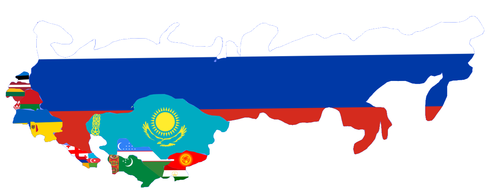

La Estela de Hierro, Unida por el Frío, Forjada en el Este.
¡Encuentra toda la información que necesitas sobre las 6 regiones geopolíticas!
Ver más ->
Eslavistán es la región de los países que formaron parte de la extinta Unión Soviética (URSS), un espacio definido por un conjunto de desafíos estructurales heredados del modelo económico y social soviético.
Eslavistán no es solo un conjunto de países; es un concepto forjado por la unidad política más grande y coercitiva del siglo XX.
Eslavistán incluye:
Europa Central
Incluye Ucrania, Bielorrusia, Moldavia, y las repúblicas bálticas (Estonia, Letonia, Lituania; los cuales, son un caso de hibridismo), Rusia (la RSFS de Rusia que es bicontinental) y Georgia, Armenia, Azerbaiyán (Transcaucasia)
Asia Central
Son los "Cinco Stans": Kazajistán, Uzbekistán, Tayikistán, Kirguistán y Turkmenistán.